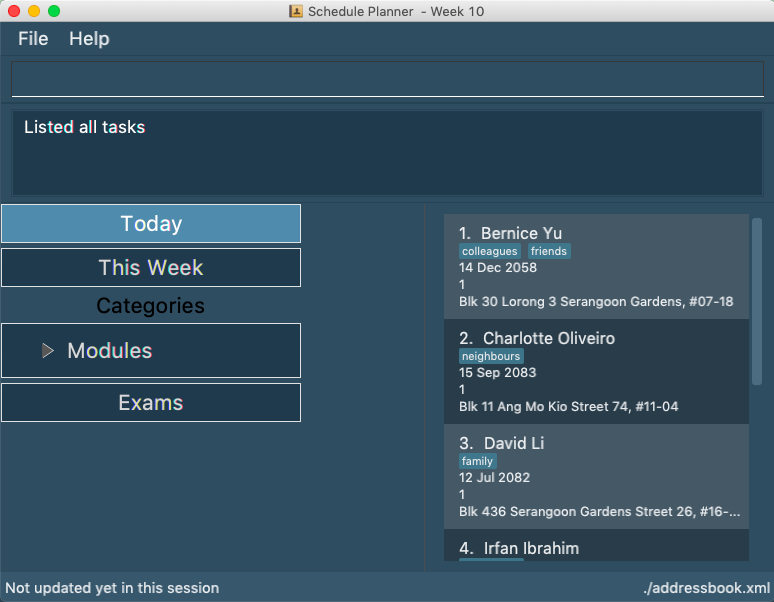

By: Team SE-EDU Since: Jun 2016 Licence: MIT
- 1. Introduction
- 2. Quick Start
- 3. Features
- 3.1. Viewing help :
help - 3.2. Adding a wish:
add - 3.3. Editing a wish :
edit - 3.4. Listing wishes :
list - 3.5. Listing history of entered commands :
history -c - 3.6. Viewing your saving history:
history -s - 3.7. Locating wishes by name:
find - 3.8. Deleting a wish :
delete - 3.9. Selecting a wish :
select - 3.10. Save money for a particular wish:
save - 3.11. Move money between wishes:
move - 3.12. Editing a remark for a wish :
remark - 3.13. Undoing previous command :
undo - 3.14. Redoing the previously undone command :
redo - 3.15. Clearing all entries :
clear - 3.16. Exiting the program :
exit - 3.17. Saving the data
- 3.18. Encrypting data files
[coming in v2.0]
- 3.1. Viewing help :
- 4. FAQ
- 5. Command Summary
1. Introduction
WishBook (WB) is a piggy bank in a digital app form, made for people who need a user-friendly solution for keeping track of their disposable income. Not only does WB keep records of your savings, it also allows users to set items as goals for users to work towards, serving as a way to cultivate the habit of saving. WB is made for people who have material wants in life, but are uncertain of purchasing said wants, by helping them to reserve disposable income so that they know they can spend on their wants. So what are you waiting for? Go to Section 2, Section 2, “Quick Start” and start saving!
2. Quick Start
-
Ensure you have Java version
9or later installed in your Computer. -
Download the latest
wishbook.jarhere. -
Copy the file to the folder you want to use as the home folder for your WishBook app.
-
Double-click the file to start the app. The GUI should appear in a few seconds.
 -
Type the command in the command box and press Enter to execute it.
e.g. typinghelpand pressing Enter will open the help window. -
Some example commands you can try:
-
list: Lists all the items you have set as wishes (sorted by due date). -
addn/uPhoneXX p/1000 a/5m: adds an item “uPhoneXX” as a goal to be completed in 5 months. -
help: displays list of command with usage. -
clear: clears view -
exit: exits the app
-
-
Refer to Section 3, “Features” for details of each command.
3. Features
Command Format
-
Words in
UPPER_CASEare the parameters to be supplied by the user e.g. inadd WISH,WISHis a parameter which can be used as add iPhone. -
Items in square brackets are optional e.g. in
list [FILTER],FILTERis an optional parameter, since the list command can be used aslistto display all wishes in WishBook. -
Items with
… after them can be used multiple times including zero times e.g.[t/TAG]…can be used ast/broke,t/needsetc. -
The
/symbol between parameters means that you can use either of the parameters types in the command e.g. inadd WISH PRICE [TIME_GIVEN]/[START_DATE to END_DATE], you provide either theTIME_GIVENparameter orSTART_DATEandEND_DATEparameters.
3.1. Viewing help : help
Displays a popup window showing all the commands a user can use in WishBook.
Format: help
3.2. Adding a wish: add
Adds a wish to the wish list
Format: add n/WISH_NAME p/PRICE t/[a/TIME_GIVEN]/[d/END_DATE] [u/URL] [r/REMARK] [t/TAG] [MORE TAGS]
-
[END_DATE]: Specified in dd/mm/yyyy format. Separators are optional. Allowed separators are either dashes ‘-’, forward slashes ‘/’ or periods ‘.’ -
[TIME_GIVEN]: Specified in terms of days, weeks or months or years, prefixes marking such time periods are ‘d’, ‘w’, ‘m’ and ‘y’ respectively.
|
If an invalid date is provided, a warning message will be displayed to prompt the user to reenter a valid date. Until all fields provided are valid, the wish will not be added to |
Examples:
-
add n/smallRice p/999 a/2d -
add n/kfcBook 13inch p/2300 a/6m3w r/For dad t/family t/computing -
add n/prinkles p/1.95 d/24/04/2020
3.3. Editing a wish : edit
Edits an existing wish in the wish list.
Format: edit INDEX [n/WISH_NAME] [p/PRICE] [a/TIME_GIVEN]/[d/END_DATE] [u/URL] [t/TAG]
Examples:
-
edit 1 n/Macbook Pro t/Broke wishes
Edits the name of the wish and the tag of the 1st wish to be Macbook Pro and Broke wishes respectively -
edit 2 p/22 a/22w
Edits the price and time given to accomplish the 2nd wish to 22 (in the chosen currency) and 22 weeks respectively.
3.4. Listing wishes : list
Shows a list of all the wishes you have set, sorted by date by default, based on the given filter.
If no filter is specified, all wishes in the WishBook will be listed.
Format: list [FILTER]
-
list
Lists all the wishes in the WishBook. -
list -c
Lists all the completed wishes in the WishBook. -
list -u
Lists all the uncompleted wishes in the WishBook.
3.5. Listing history of entered commands : history -c
Lists all the commands that you have entered in reverse chronological order.
Format: history -c
|
Pressing the ↑ and ↓ arrows will display the previous and next input respectively in the command box. |
3.6. Viewing your saving history: history -s
Shows a history of savings you have allocated, from newest to oldest.
Format: history -s
|
Only history of wishes which currently exist in the |
3.7. Locating wishes by name: find
Finds wishes which satisfy the given search predicate.
Format: find SEARCH_PREDICATE [MORE_SEARCH_PREDICATES]
Examples:
-
find n/watch
Returns any wish with name containing watch -
find n/watch t/broke wishes
Returns any wish with name containing 'watch', with tag 'broke wishes'.
3.8. Deleting a wish : delete
Deletes the specified wish from the list.
Format: delete INDEX
Examples:
-
list
delete 2
Deletes the 2nd wish in the list. -
find watch
delete 1
Deletes the 1st wish in the results of the find command (if any).
3.9. Selecting a wish : select
Selects the wish identified by the index number used in the displayed wish list.
Format: select INDEX
Examples:
-
list
select 2
Selects the 2nd wish in the wish list. -
find price
select 1
Selects the 1st wish in the results of thefindcommand.
3.10. Save money for a particular wish: save
Channels a specified amount of money to savings for a specified wish.
Format: save INDEX AMOUNT
Examples:
-
save 1 1000
Attempt to save $1000 for the wish at index 1. -
save 1 -100.50
Attempt to remove $100.50 from the savings for the wish at index 1. -
save 0 100.50
Attempt save $100.50 tounusedFunds.
3.11. Move money between wishes: move
Moves funds from one wish to another.
Format: move FROM_WISH_INDEX TO_WISH_INDEX AMOUNT
|
Index 0 is specially allocated for unused funds. Excess funds when user attempts to save to a wish will be automatically allocated to |
Examples:
-
move 1 2 10
Attempt to move $10 from the wish at index 1 to the wish at index 2. -
move 0 1 10
Attempt to move $10 from unusedFunds to the wish at index 1. -
move 1 0 10
Attempt to move $10 from the wish at index 1 tounusedFunds.
3.12. Editing a remark for a wish : remark
Edits the remark for a wish specified in the index.
Format: remark INDEX r/[REMARK]
Examples:
-
list
remark 1 r/Buying this for dad.
Edits the remark for the first wish toBuying this for dad. -
list
remark 1 r/
Removes the remark for the first wish (if any).
3.13. Undoing previous command : undo
Restores WishBook to the state before the previous undoable command was executed.
Format: undo
|
Undoable commands: commands that modify WishBook content ( |
Examples:
-
delete 1
list
undo(reverses thedelete 1command) -
select 1
list
undo
Theundocommand fails as there are no undoable commands executed previously. -
delete 1
clear
undo(reverses theclearcommand)
undo(reverses thedelete 1command)
3.14. Redoing the previously undone command : redo
Reverses the most recent undo command.
Format: redo
Examples:
-
delete 1
undo(reverses thedelete 1command)
redo(reapplies thedelete 1command) -
delete 1
redo
Theredocommand fails as there are noundocommands executed previously. -
delete 1
clear
undo(reverses theclearcommand)
undo(reverses thedelete 1command)
redo(reapplies thedelete 1command)
redo(reapplies theclearcommand)
3.15. Clearing all entries : clear
Clears all entries from WishBook.
Format: clear
3.16. Exiting the program : exit
Exits the program.
Format: exit
3.17. Saving the data
WishBook data are saved in the hard disk automatically after any command that changes the data.
There is no need to save manually.
3.18. Encrypting data files [coming in v2.0]
{explain how the user can enable/disable data encryption}
4. FAQ
Q: How do I transfer my data to another Computer?
A: Install the app in the other computer and overwrite the empty data file it creates with the file that contains the data of your previous WishBook folder.
5. Command Summary
-
Add
add n/WISH_NAME p/PRICE t/[a/TIME_GIVEN]/[d/END_DATE]
e.g.add n/kfcBook_13inch p/2300 a/6m3w -
Clear :
clear -
Delete :
delete INDEX
e.g.delete 3 -
Edit :
edit INDEX [n/WISH_NAME] [p/PRICE] [a/TIME_GIVEN]/[d/END_DATE] [t/TAG]
e.g.edit 1 n/Macbook Pro t/Broke wishes -
Find :
find SEARCH_PREDICATE [MORE_SEARCH_PREDICATES]
e.g.find d/22 -
List :
list -
List completed :
list -c -
List uncompleted :
list -u -
Help :
help -
Select :
select INDEX
e.g.select 2 -
Save :
save INDEX AMOUNT
e.g.save 1 1000 -
Move :
move FROM_WISH_INDEX TO_WISH_INDEX AMOUNT
e.g.move 1 2 10 -
Command History :
history -c -
Savings History :
history -s -
Remark :
remark INDEX r/[REMARK] -
Undo :
undo -
Redo :
redo -
Exit :
exit